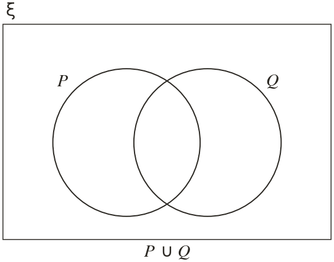
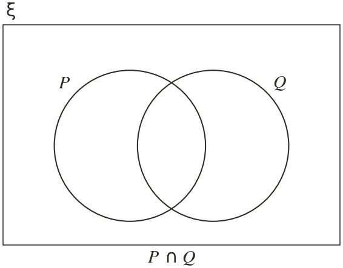
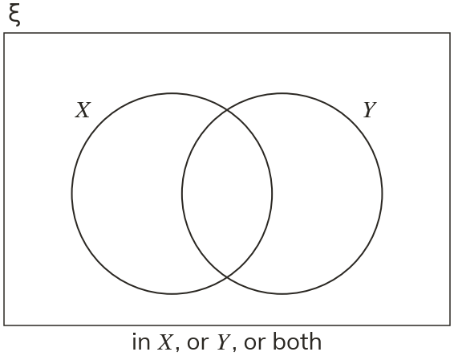
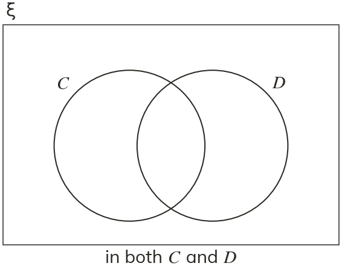
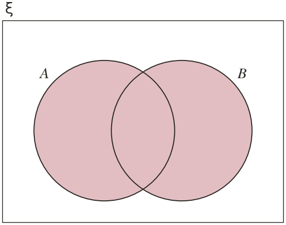
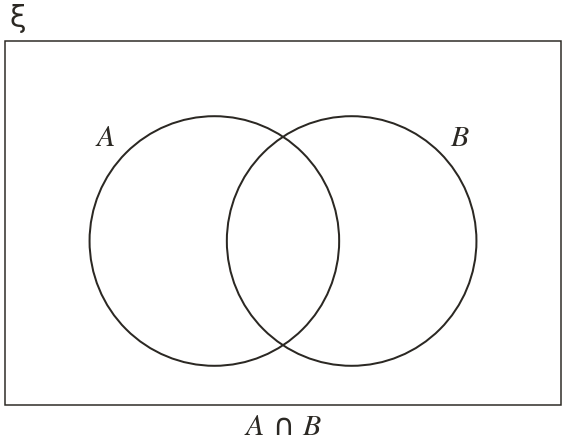

Westonbirt Maths · Probability and Sets
Venn Diagrams
Name: ______________________ Date: ____________
1
Shade ∪

2
Shade ∩

3
Shade the region for "in X, or in Y, or in both". Write it in set notation.

4
Shade the region for "in both C and D". Write it in set notation.

5
Lee says the shaded region is ∩ What is his mistake?

Ext
, and ∪
Find ∩ and shade ∩
Find ∩ and shade ∩
